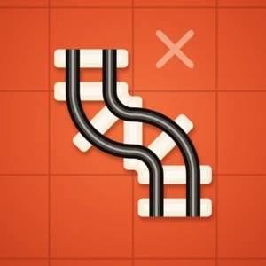
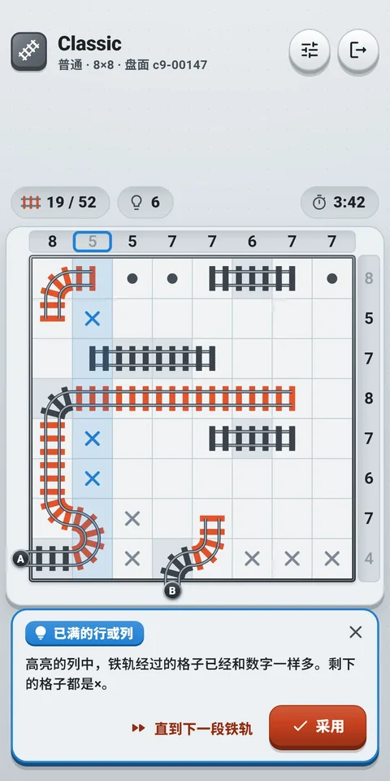
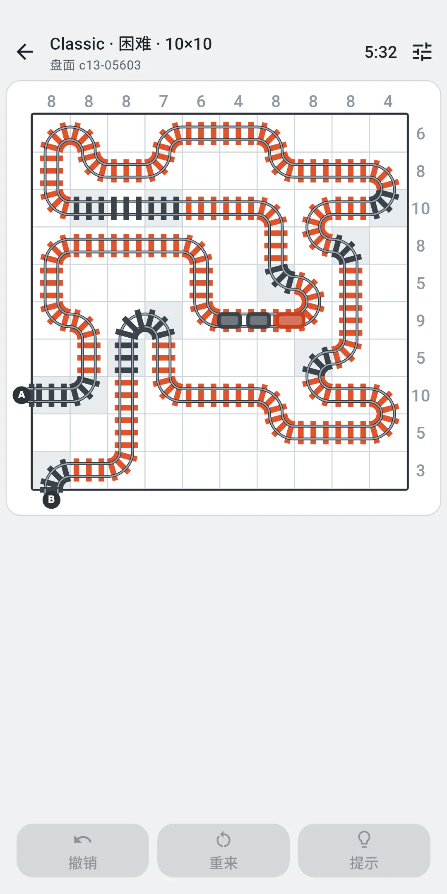
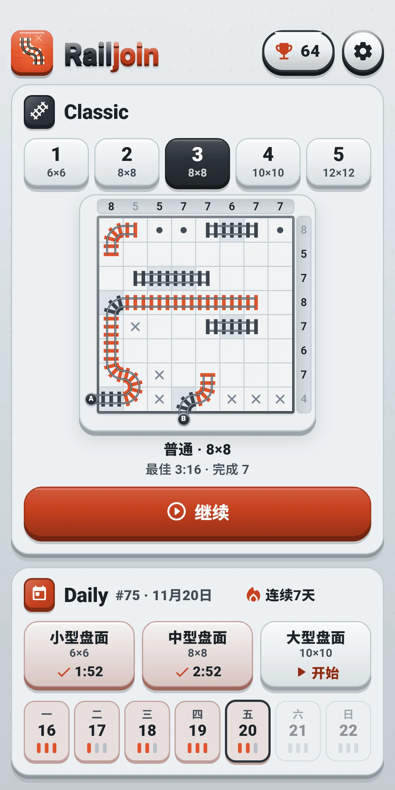
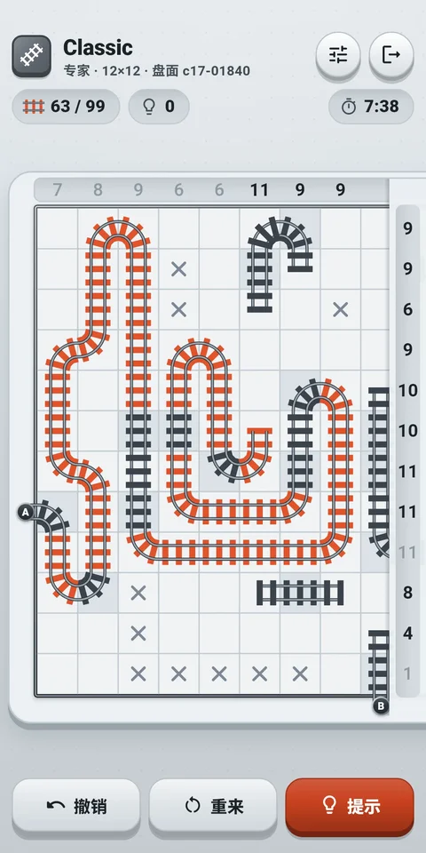
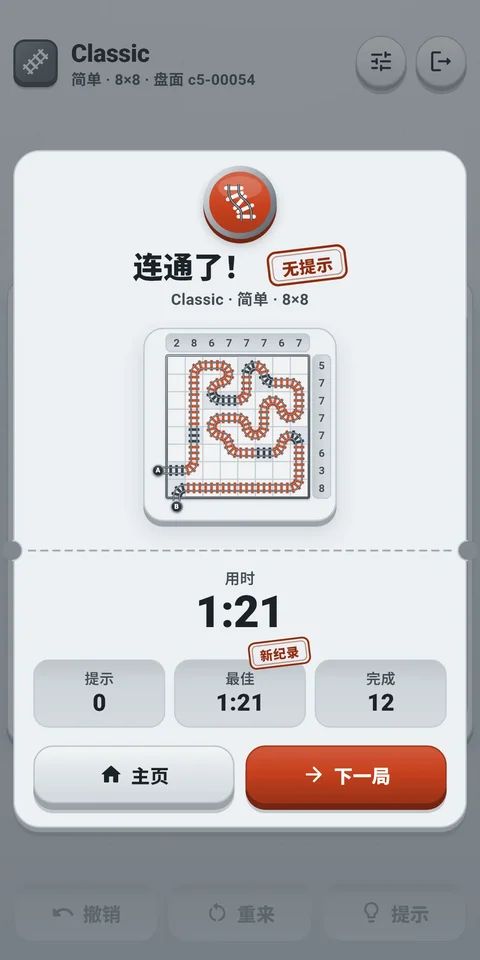
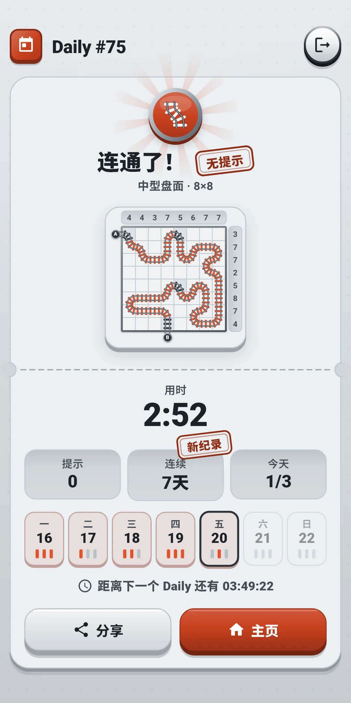
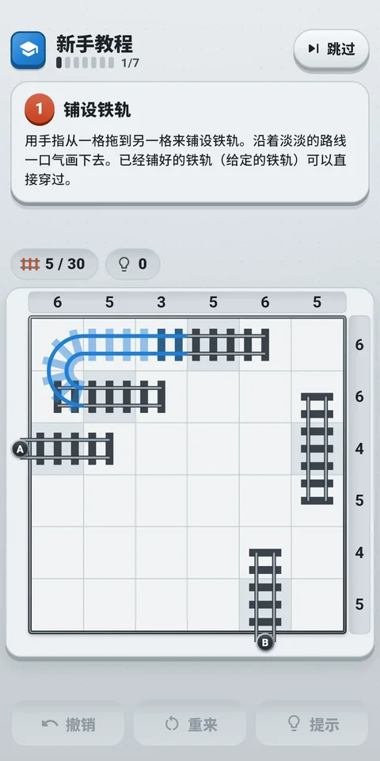

玩法说明







| 应用名称 | Railjoin |
|---|---|
| 版本 | 1.0.0 |
| 开发 | Willee Project |
| 支持平台 | Android |
Railjoin 是一款用一条铁轨把入口 A 连到出口 B 的逻辑谜题。盘面上方和右侧的数字，是那一列、那一行里铁轨经过的格子数。每个盘面都只有一个答案，不靠猜测、只靠逻辑就能解到最后。
新手教程用一个6×6的盘面教你基础，分七步：铺设铁轨 → 放置× → 放置● → 规则冲突 → 撤销 → 提示 → 独立完成。每一步都会让要操作的地方亮起，只有亮起的地方才有反应。教程盘面不计入记录，全部完成后点击开始就会进入主页。提示会用名称告诉你用了哪种要点。从最容易的开始，如下。
入门和简单的盘面用前四个（从只有两个方向到剩下全是铁轨）就能解开。普通会出现需要用到防止成环和防止提前完成的盘面，困难会出现需要用到穿线奇偶的盘面，专家会出现需要用到邻格推理的盘面。更难的要点，会由提示连同理由一起告诉你（见第4章）。
顶部栏左侧是模式图标和标题（Classic、Daily #12），下面的小字是等级、盘面大小和盘面编号（Daily 是盘面种类、盘面大小和盘面编号）。右侧是快捷设置按钮，最右端是门形的退出按钮。盘面正上方的一排小格，从左起显示铁轨格数（两侧都已连接的格子 / 答案的铁轨格子）和用过的提示次数，最右端显示时间（可以在设置中用显示时间隐藏）。
| 按钮 | 作用 |
|---|---|
| 快捷设置 | 打开一个面板，不离开游戏画面就能更改效果和辅助设置（见第5、8章）。往下拉或点击面板外就能关闭 |
| 退出（门形） | 回到主页。正在解的盘面会自动保存 |
盘面下方的工具栏：
| 按钮 | 作用 |
|---|---|
| 撤销 | 取消最后一步操作。没有可撤销的内容时会变淡、不能点击 |
| 重来 | 打开选择这一局从头开始或新的一局的面板（见下） |
| 提示 | 告诉你下一步和理由（见第4章）。用过提示后会带上次数，例如提示 3 |
重来面板：
| 选项 | 内容 |
|---|---|
| 这一局从头开始 | 擦掉所有铺上的铁轨和×、●，也清空撤销记录。Classic 的用时和提示也从头算，Daily 则继续累计当天的用时和提示。还没有开始操作的盘面会变淡、不能点击 |
| 新的一局（Classic） | 放弃这一局，换一局同等级的盘面。放弃的盘面不算完成。Daily 没有这一项 |
提示按钮会告诉你解题的下一步，并说明理由。提示不限次数，免费使用。提示气泡出现在下方工具栏的位置，会暂时盖住工具栏。气泡如果会挡住提示所指的格子、行、列或数字，就会移到盘面上方，这时工具栏会重新显示。
按钮要依次按：提示 → 显示更多 → 采用。
在设置的辅助设置中开关。游戏中可以用快捷设置马上更改。
新手教程的盘面不受这些设置影响：始终显示规则冲突，不使用立即显示失误。
上方是应用图标和名称，右侧是带奖杯和完成盘面数的记录按钮，以及齿轮形状的设置按钮。下面依次是 Classic 卡片和 Daily 卡片。想再玩一次新手教程，可以在设置的辅助设置中选择重玩教程（见第8章）。
| 等级 | 盘面大小 | 所需的最难要点 |
|---|---|---|
| 入门 | 6×6 | 前四个（只有两个方向到剩下全是铁轨） |
| 简单 | 8×8 | 前四个 |
| 普通 | 8×8 | 防止成环、防止提前完成 |
| 困难 | 10×10 | 穿线奇偶 |
| 专家 | 12×12 | 邻格推理 |
Railjoin Daily #12 · 中型盘面 ✅ 3:41 提示 0次 🔥 连续5天
#12是 Daily 的编号，旁边是盘面种类和用时（分:秒，超过一小时则为时:分:秒）。第一行的“Railjoin Daily”在任何语言中都一样。第二行是提示次数，第三行是连续记录（两天以上才显示）。盘面本身不会放进去，因为会泄露答案。第一个 Daily 开放的那天是 #1，之后每天加一，编号和盘面种类相同就是同样的盘面。
点击主页右上角奖杯形状的记录按钮打开（按钮上也显示完成的盘面数）。
点击主页右上角的设置（齿轮）打开。分为三组。游戏中可以用快捷设置按钮马上更改前两组。
| 项目 | 内容 |
|---|---|
| 音效 | 开关铺设和擦除铁轨、放置和清除×、●、行或列的数字达标、规则冲突、提示、撤销、盘面完成、行驶中的火车等的声音 |
| 振动 | 铺设铁轨时短促，擦除铁轨或放置×、●时更轻，行或列的数字达标时两下，规则冲突时短促而沉重的两下，连完铁轨时较长。可以开关 |
| 减少特效 | 一次减少所有特效。开启期间，下面的连接时的光效和完成时的火车都相当于关闭（开关不能点，原来的值会保留），按住放大也会不带动画直接放大 |
| 连接时的光效 | 铺设铁轨的格子会短暂发亮。默认开启 |
| 完成时的火车 | 连通后，在显示结果前火车会从 A 开到 B。关闭后直接显示结果。默认开启 |
没有整个盘面晃动的特效。
| 项目 | 内容 |
|---|---|
| 显示规则冲突 | 显示超过数字的行或列、分岔和闭合的环。默认开启 |
| 立即显示失误 | 马上标出与答案不同的铁轨和×、●。默认关闭 |
| 显示时间 | 在盘面正上方那排小格显示时间。默认开启 |
| 重玩教程 | 再玩一次新手教程。练习盘面不计入记录，完成或跳过后回到设置。快捷设置里没有这一项 |
| 项目 | 内容 |
|---|---|
| 语言 | 跟随系统（默认），或从列表（English · 日本語 · 한국어 · 简体中文 · 繁體中文）中直接选择 |
| 隐私选项 | 再次打开广告同意窗口。只在需要同意的地区（例如欧洲）显示 |
| 关于 | 版本、本说明（玩法说明）、隐私政策、开源许可 |
屏幕颜色跟随设备的深色模式设置。应用内没有单独的开关。